身体感覚・錯覚・五感インタフェースの基礎研究から、VR/メタバースを活用した教育・訓練まで、研究室の取り組みを紹介します。From fundamental research on bodily sensation, illusions and multisensory interfaces to education and training with VR and the metaverse.
錯覚や身体感覚の仕組みを利用して、従来の装置では難しかった力覚・運動感覚・移動感覚を生み出す技術を研究しています。We use the mechanisms of illusions and bodily sensation to create force, kinesthetic and self-motion sensations that conventional devices struggle to produce.
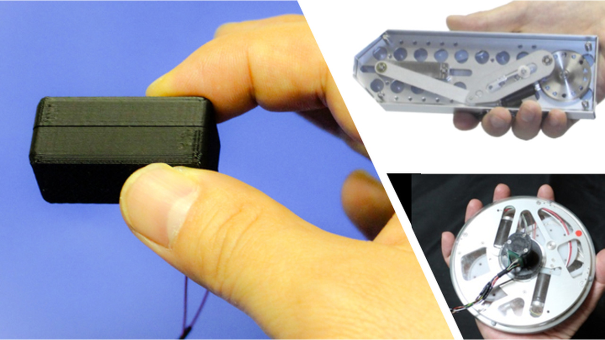
擬似力覚表現の研究Pseudo-Force Presentation
牽引感や重量感といった力感覚は、皮膚や筋などにある受容器への機械的刺激によって生み出されますが、受容器の特性や身体構造の影響を強く受けます。Force sensations such as being pulled or feeling weight arise from mechanical stimulation of receptors in the skin and muscles, but they are strongly shaped by receptor properties and body structure.
そのため、知覚・運動特性を逆手に取れば、従来では表現できない力覚を生み出すことができます。本研究では、こうした擬似力覚表現と五感情報を組み合わせた表現技術について研究しています。By turning these perceptual and motor characteristics to our advantage, we can create force sensations that conventional methods cannot render. We study presentation techniques that combine such pseudo-force cues with multisensory information.
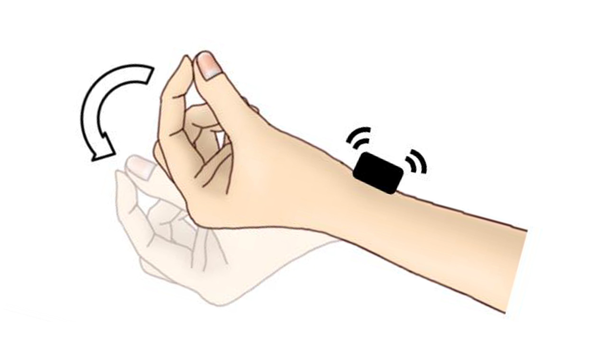
腱振動刺激による運動錯覚を使った情報表現Information Display Using Kinesthetic Illusions from Tendon Vibration
腱に対する振動刺激によって生じる運動錯覚を活用し、新しい情報提示手法の実現を目指しています。腱振動刺激は、実際には身体を動かしていないにもかかわらず、関節が動いたように感じさせることができます。We aim to build new ways of presenting information using the movement illusions produced by vibrating tendons. Tendon vibration can make a joint feel as if it has moved even though the body is still.
この現象は身体の状態を知覚する固有感覚に作用するため、身体内部に直接働きかける情報提示として利用できる可能性があります。運動錯覚を、方向や強度などの情報を身体感覚として表現する手段と位置づけ、UIへの活用に向けた研究を行っています。Because it acts on proprioception, the sense of the body's own state, it may enable information display that works directly inside the body. We treat the illusion as a means of expressing information such as direction and intensity through bodily sensation, and study its use in user interfaces.
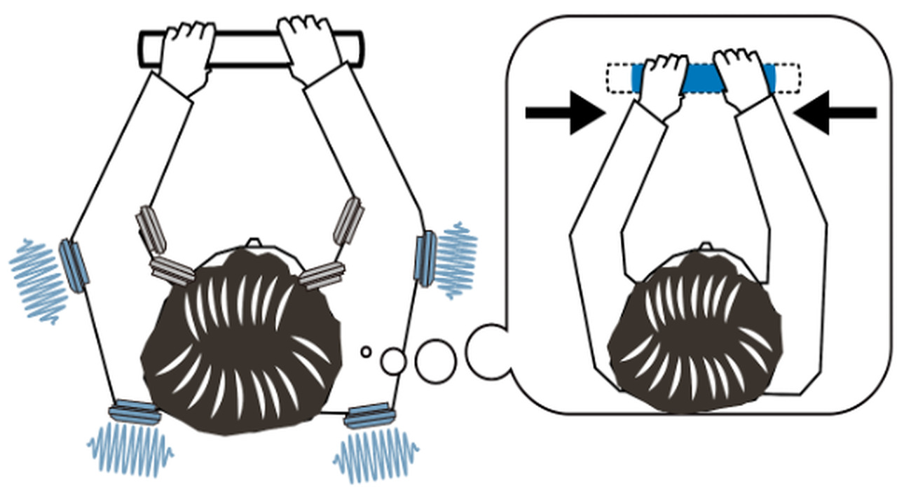
腱振動による物体の変形錯覚Object Deformation Illusions by Tendon Vibration
腱振動によって生じる運動錯覚を、棒の擬似的な伸縮を提示する手法に応用する研究を進めています。We apply movement illusions induced by tendon vibration to a method that makes a rod seem to stretch or shrink.
両手で物体に外力を加えて変形させるVRインタラクションへの応用や、操作のリアリティを高める可能性を検証しています。We are examining applications to VR interactions in which users deform objects with both hands, and the potential to make such manipulation feel more real.
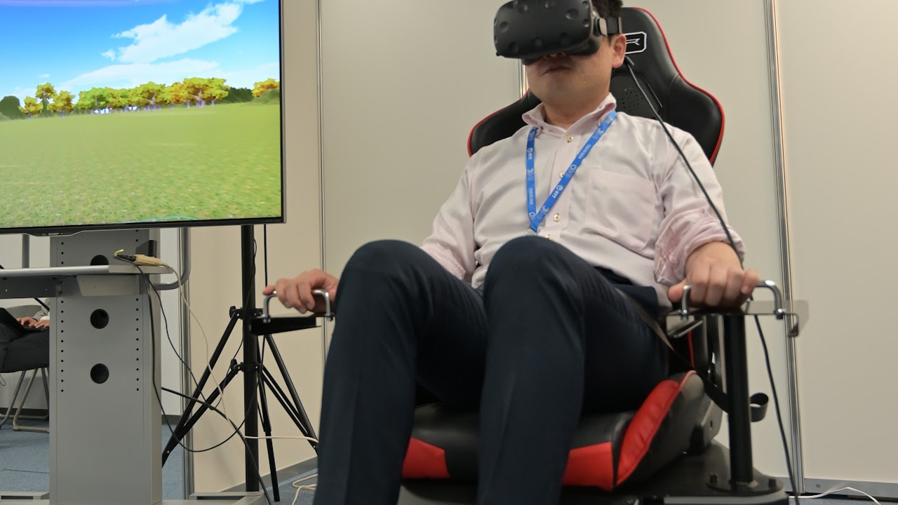
VR空間の移動感覚に関する研究Sense of Self-Motion in VR
VR空間で歩行した感覚を生むために、実際に歩くことなく歩行したような感覚を生み出す手法の確立を目指しています。To create the feeling of walking in VR, we aim to establish methods that produce a walking sensation without actually walking.
着座状態で視覚・前庭感覚・触覚に機械的・電気的刺激を提示し、擬似的な歩行感覚を生み出すVR技術を研究しています。We study VR techniques that present mechanical and electrical stimulation to the visual, vestibular and tactile senses of a seated user to generate a pseudo-walking sensation.
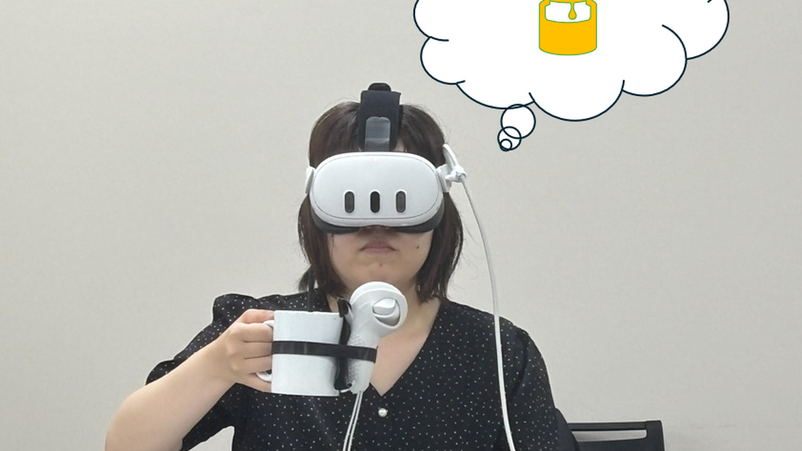
Pseudo-hapticsによる飲料体験変調の研究Modulating Drinking Experiences with Pseudo-Haptics
VRにおける疑似触覚フィードバックが、飲料の知覚にどのような影響を与えるかを調べています。We investigate how pseudo-haptic feedback in VR affects the perception of beverages.
実際の手の動きに対してVR内の手の表示を遅らせたり早めたりする視覚操作（Pseudo-haptics）が、飲用課題にどのような影響を及ぼすかを評価しました。We evaluated how visually delaying or advancing the virtual hand relative to the real hand (pseudo-haptics) influences a drinking task.
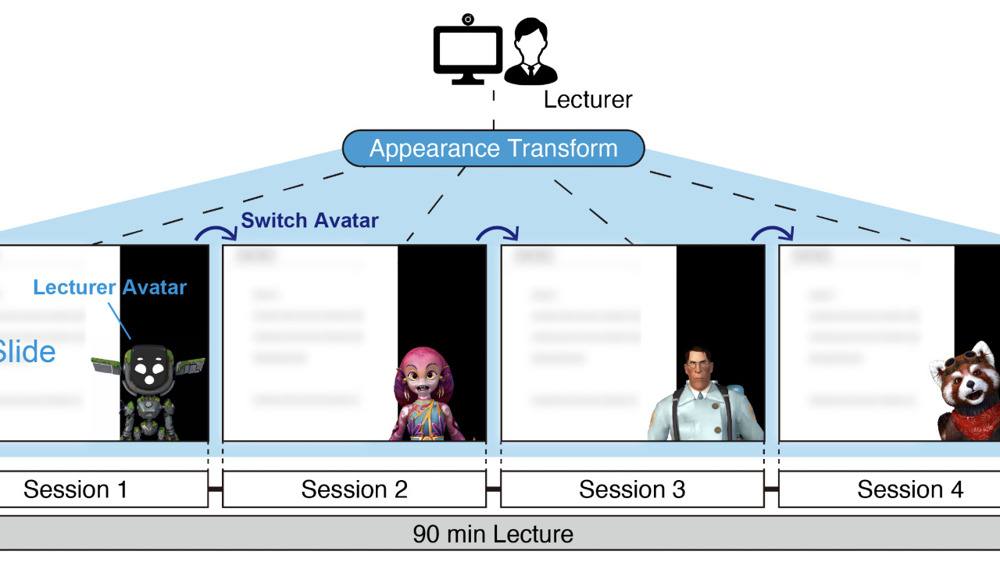
バーチャルオムニバス講義Virtual Omnibus Lecture
人の記憶は、周囲の風景や状況といった文脈（コンテキスト）の影響を受けます。この性質を遠隔講義に活かすため、1回の講義の中で講師が複数のアバタを切り替えて話す「バーチャルオムニバス講義」を提案しています。Human memory is influenced by context, such as surrounding scenery and situations. To make use of this in remote lectures, we propose the “Virtual Omnibus Lecture”, in which a lecturer switches between several avatars within a single lecture.
実際の講義でのフィールド実験では、4種類のアバタで受講した学生は、1種類のアバタで受講した学生よりも、直後の記憶テストの成績が高くなりました。In a field study in an actual course, students who attended a lecture given with four avatars scored higher on an immediate memory test than those who attended with a single avatar.
身体のすぐ周りの空間（身体近傍空間）は、視覚・聴覚・触覚の情報が統合される特別な空間で、道具の使用や歩行などによって広がることが知られています。The space immediately around the body, called peripersonal space, is where visual, auditory and tactile information are integrated, and it is known to expand with tool use or walking.
歩行音に合わせた振動を足裏に与えると、実際には身体を動かしていないにもかかわらず、身体近傍空間の表象が拡張することを、近づいてくる音と触覚の多感覚処理を指標として示しました。前腕への振動では、この効果は生じませんでした。Using the multisensory processing of looming sounds and touch as a measure, we showed that vibrations on the soles of the feet based on footstep sounds extend the representation of peripersonal space without any body movement. Vibrations on the forearms did not have this effect.
視点変化によるPseudo-hapticsPseudo-Haptics by Viewpoint Shifts
VR内の手や視点の見え方を実際の動きからずらすことで、重さなどの触覚を感じさせるPseudo-hapticsを研究しています。We study pseudo-haptics that make users feel weight and other haptic properties by shifting how the hand and the viewpoint move in VR relative to the actual movement.
物体を持ち上げる動作で、仮想の手の移動量に加えて仮想の視点の上下の移動量も操作することで、知覚される重さを変えられることを示しました。三菱電機との共同研究です。We showed that, when lifting an object, manipulating the vertical movement of the virtual viewpoint in addition to that of the virtual hand changes the perceived weight. This is a joint project with Mitsubishi Electric.
VR・メタバースによる教育・訓練Education & Training with VR and the Metaverse
東京大学バーチャルリアリティ教育研究センターでの実践を通じて、VR・メタバースを講義や訓練に活用する方法を研究しています。Through practice at the UTokyo Virtual Reality Educational Research Center, we study how to use VR and the metaverse in lectures and training.
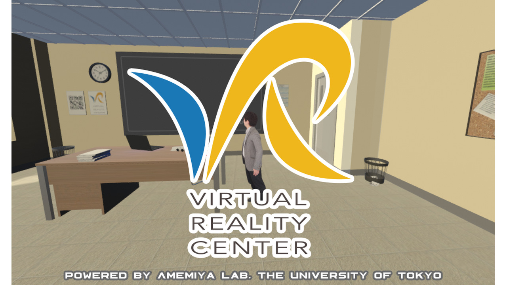
ソーシャルVR空間でのVR講義VR Lectures in Social VR Spaces
新型コロナウイルス感染症（COVID-19）の世界的な拡大に伴い、大学でも対面講義から遠隔講義への変更を迫られました。As COVID-19 spread worldwide, universities had to shift from in-person to remote lectures.
東大VRセンターではVR講義を実施してきましたが、気軽に試してみたいという問い合わせが多いことから、バーチャルSNSのひとつであるclusterにVR講義用の教室を公開しました。交流の場として、カフェを模したスペースも公開しています。The UTokyo VR Center has been running VR lectures, and because many people asked to try them casually, we opened a VR lecture classroom on the virtual social platform cluster, along with a café-style space for socializing.
ソーシャルVRサービスを活用した遠隔講義Remote Lectures Using Social VR Services
新型コロナウイルス感染症の拡大に伴い、日本の大学では遠隔講義の導入が一気に進みました。一方で、オンライン会議システムを使った遠隔講義が続くことによる「Zoom Fatigue（Zoom疲れ）」も報告されています。As COVID-19 spread, Japanese universities rapidly adopted remote lectures, while continued use of video conferencing led to reports of "Zoom fatigue."
VRセンターでは、ソーシャルVRプラットフォームを遠隔講義に活用できないか、実験的な講義を通じて有効なトピックや使い方に取り組んでいます。Through experimental lectures, the VR Center explores whether social VR platforms can be used for remote teaching, and which topics and ways of use work well.
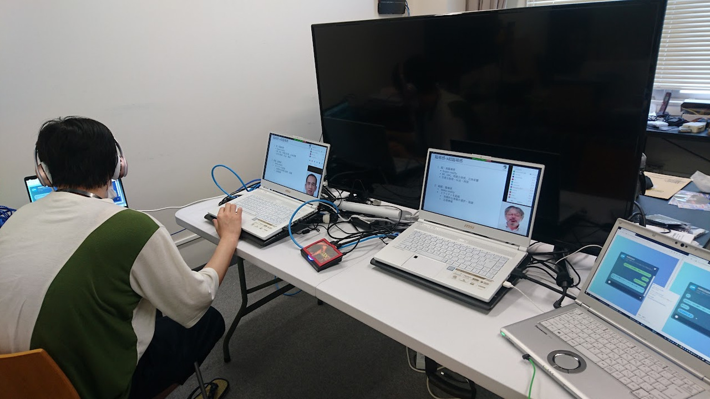
アバタ技術を使った効果的な遠隔講義の研究Effective Remote Lectures with Avatar Technology
アバタを使ったライバー（いわゆるVTuber）の登場など、自らの見た目を変えて情報発信をする場が増えています。しかし、見た目を変えた講師が情報を伝えることで、先生側・生徒側にどのような効果が得られるかは、まだ十分に明らかになっていません。With the rise of avatar-based streamers (so-called VTubers), more people share information with an altered appearance. However, the effects on teachers and students when a lecturer with a changed appearance teaches are not yet well understood.
東大VRセンターでは、ディープフェイク技術で見た目を変えた状態でZoomによるオンライン授業を実施し、受講生の振る舞いを検証しています。At the UTokyo VR Center, we run online classes on Zoom with the lecturer's appearance altered by deepfake technology and examine how students behave.
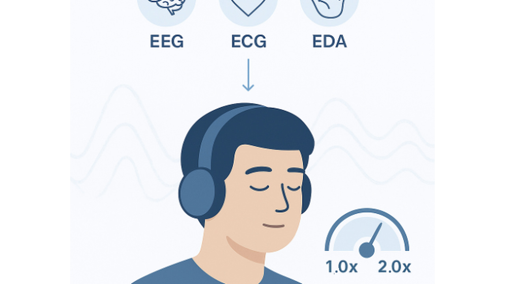
生体情報を利用した学習支援Learning Support Using Biosignals
動画や音声コンテンツを倍速で再生する視聴スタイルが広まっています。Watching videos and listening to audio at increased playback speed has become common.
本研究では、脳波などの生体信号に基づいて集中度を計測し、音声コンテンツの再生速度を制御する手法の開発を進めています。We are developing a method that measures concentration from EEG and other biosignals and uses it to control the playback speed of audio content.
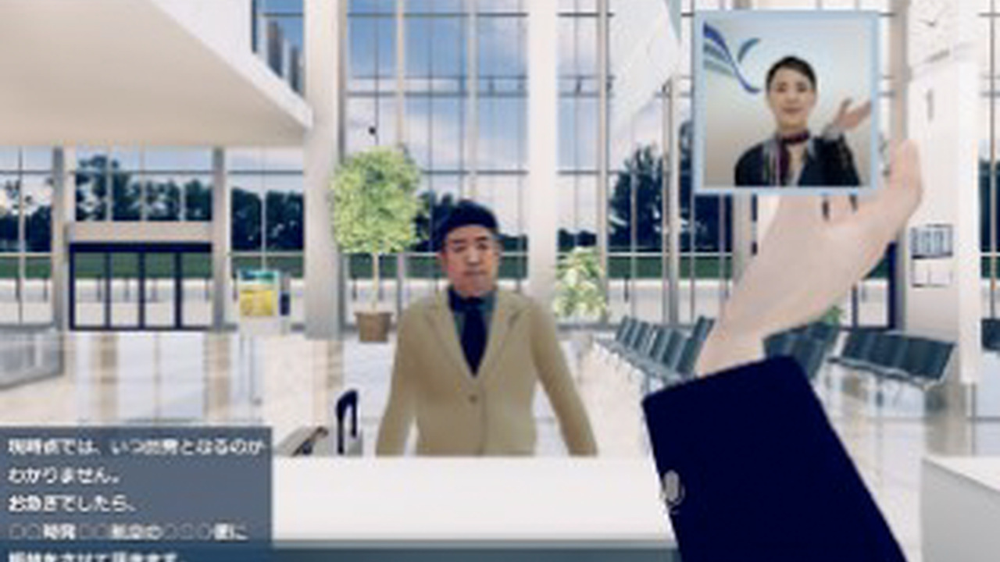
VRを活用した訓練システムの研究VR-Based Training Systems
教育にVRを活用すると、教室内では難しかったインタラクティブな体験の導入、個々の受講者の理解度に応じた講義内容の編集、さまざまな知覚・心理効果の拡張による学習内容の理解の深化などが期待できます。Using VR in education makes it possible to introduce interactive experiences that are hard to offer in a classroom, tailor content to each learner's understanding, and deepen understanding by extending perceptual and psychological effects.
本テーマでは、実際の教育・学習で使うことを目標に、新しいVR/AR教育システムを研究しています。In this theme, we study new VR/AR education systems intended for use in real teaching and learning.
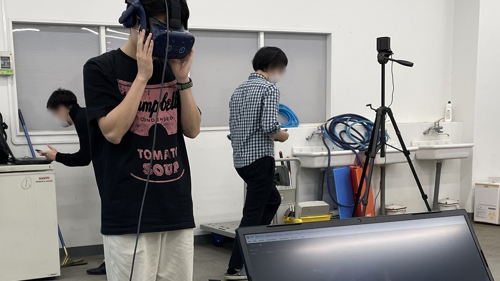
一人称視点の切り替えによる小動物の手術VR教材First-Person Surgical VR Materials for Small-Animal Surgery
獣医臨床教育において、技能依存度の高い外科手術の教育は、その複雑さと繊細さから常に難しい課題です。In veterinary clinical education, teaching highly skill-dependent surgery is always challenging because of its complexity and delicacy.
本研究では、術者の頭部に360度カメラを装着して撮影したVR映像を用い、一人称視点で体験できる獣医学教育用のVRシステムを開発し、従来の映像教材と学習効果を比較しました。We developed a VR system that lets learners experience surgery from the surgeon's first-person view, using 360° video recorded with a camera mounted on the surgeon's head, and compared its learning effects with conventional video materials.
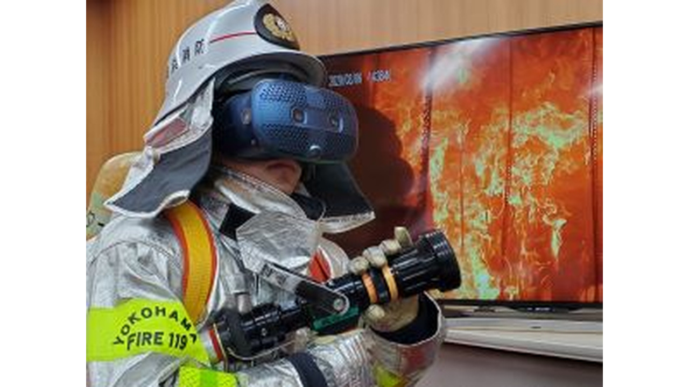
消防隊員のVR訓練VR Training for Firefighters
進行中のプロジェクトです。詳しくは東京大学バーチャルリアリティ教育研究センターのWebサイトをご覧ください。An ongoing project. See the website of the Virtual Reality Educational Research Center, The University of Tokyo, for details.